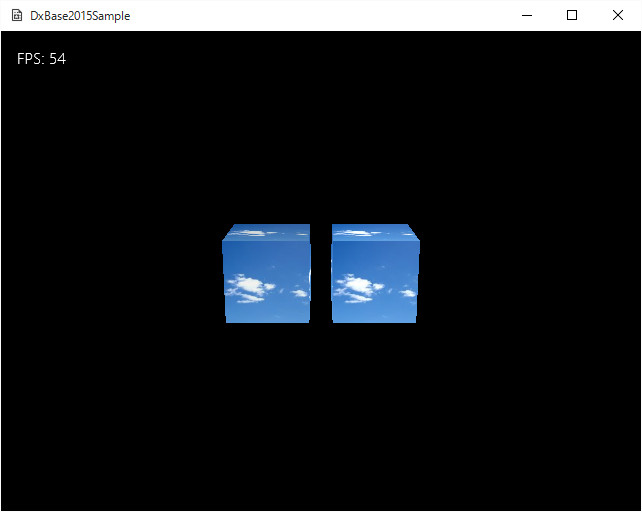

Simple08．リソース化へのヒントと衝突判定
リソース化
同じ形状（スケーリングで対応できる形状は
同じとする）のメッシュや、テクスチャなどは、オブジェクトによって一つ一つバッファを作成すると無駄が出てしまいます。また、読み込みなどもオブジェクトごとに行うと動作速度にも影響します。
そのため、
DxBase2015フルバージョンでは、
リソースという考え方を導入し、使いまわしできる頂点バッファやテクスチャなどは、別にメモリ上に配置しておいて、必要な時に使用します。
シンプル08のサンプルは、そんな
リソース化の1つの方法を提案するものです。
また、このサンプルでは
衝突判定も実装しています。
DxBase2015Simple/Simple08のソリューションを起動すると以下のような画面が現れます。

図Simple08a
二つの動く立方体があり、衝突すると反対方向に移動します。
この立方体は、
同じ頂点バッファ、インデックスバッファを利用しています。またテクスチャも使い回しています。
リソース化を実装しているのは
ObjectResource、CubeResource、TextureResourceクラスです。
ObjectResourceとCubeResourceはメッシュのリソース化するクラスです。階層化されているのは、球体やカプセルなど別の形状をリソース化する場合に、
CubeResourceのように作成できるようにです。
TextureResourceは、階層化されてません。
ゲームステージ上で、立方体とテクスチャのインスタンスを作成します。ステージに配置する、
CubeObjectのインスタンスはステージからこれらのリソースを得て、Drawします。
衝突判定
フルバージョンでは、
コンポーネントによる自動衝突判定ができますが、シンプルバージョンは
自動的には行えませんが、衝突判定の基本的な関数は実装されています。
それらは、
TransHelper.hにあり、
HitTestクラスのスタティック関数として実装されています。
HitTest::OBB_OBB()などの関数は、形状同士の単なる判定です。このほかに
HitTest::SPHERE_OBB()などがあります。
衝突判定にはもう一つの方法として
HitTest::CollisionTestObbObb()などの
速度をパラメータに加える形の判定もあります。こちらは、
トンネル現象を起こしません。ただ、動いている物同士の場合、パラメータに渡す速度は、
片方を静止させた相対的な速度、を渡します。また、こちらは衝突した場合は、その
時間を返します。詳しくは
フルバージョンのCollisionコンポーネントを参照してください。
衝突判定は、フルバージョンの実装も、
Collisionコンポーネントを持ってるすべてを相互に判定します。本当は、隣り合ってるオブジェクト同士のみ判定、とか、もう少し、判定をしなくて済むケースを実装すべきです。シンプルバージョンは、自動判定を行わないぶん、そのようなアルゴリズムを記述しやすくなっています。各自、効果的な衝突判定を実装してみるとよいでしょう。